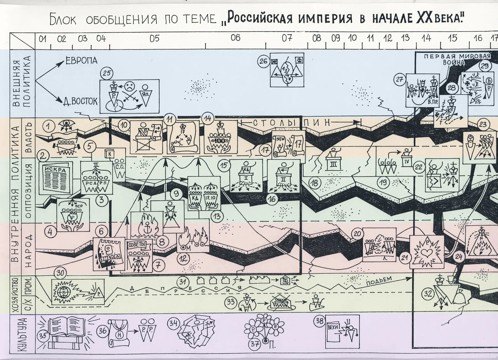

Нажмите на цветной номер, чтобы открыть материал. На маленьком экране схему можно прокручивать по горизонтали.
Список тем
Систематизация материала
Термины эпохи
Культура России на рубеже XIX–XX веков
Кодификатор 4.16 · люди, произведения, направления, достижения. Каталог на основе вашей презентации и таблицы по культуре; дополнен учебными сведениями.
Ключевые художественные направления
Всеобщая история · 1894–1917
Хронология и краткое содержание событий. Раскройте подробности, чтобы увидеть причины, участников, итоги и события российской истории того же времени. Основные события раскрывают темы навигатора ФИПИ; дополнительные — исторический контекст. Даты мировых событий — по новому стилю.
Синхронная хронология
Источники и границы перечня
ФИПИ, Навигатор самостоятельной подготовки к ЕГЭ-2026, «Всеобщая история», с. 10–11; кодификатор, позиции 5.15–5.19 и 11.1. Перечень составлен редакционно: это не закрытый официальный список дат. Официальный навигатор. Описания и синхронизация с российской историей — редакционные пояснения, а не цитаты из ФИПИ. События после отречения Николая II включены лишь как ближайший контекст.
Исторические карты
Россия в эпоху Николая II · оригинальные материалы атласов из вашей библиотеки
Задания ЕГЭ
Банк заданий Артасова · 30 вариантов, 2026
Тематическая подборка из сборника под ред. И. А. Артасова (2026). Текст восстановлен из ранее распознанной копии, ответы сопоставлены с ключами. Номера PDF приведены в сведениях об источнике. Подборка предварительная; исходные карты пока недоступны.
Задания, ожидающие оригинальных карт
Об атласе и источниках
Основа: «14-Начало ХХ века-текст к блоку.doc», первоначальный интерактивный атлас, подборки «Начало ХХ века-иллюстрации», «партии нач XX века», «Термины.docx», «Таблицы Николай II.pdf», материал по Русско-японской войне, презентация «Kultura_Rossii_v_nachale_XX_veka». Подробные пояснения и определения — редакционные дополнения к исходной схеме. Даты российских событий преимущественно даны по старому стилю; международные даты и отдельные ключевые события уточнены. Подписи иллюстраций основаны на названиях и учебных материалах; архивная атрибуция отдельных изображений требует уточнения.
Раздел «Карты»: атласы «Дрофа» для 9 и 10 классов, карта В. Николаева из папки «Атлас по истории России». Изображения встроены в автономное пособие, оригинальные легенды не обрезаны. Для личного использования; перед публичным распространением проверьте права на материалы. Файл «Окопная война.swf» не включён: современные браузеры не поддерживают Flash.